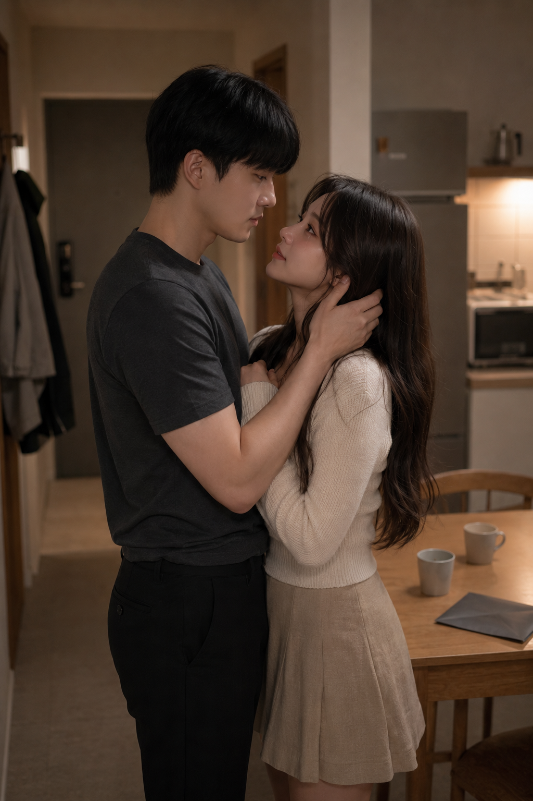

서울 서대문구 자취방 문이 열리자, 임소율은 안으로 들어서기 전에 잠깐 멈췄다. 몇 번이나 드나들었던 공간인데도 오늘은 다르게 느껴졌다. 숨겨 둔 말을 들고 들어오는 사람에게는 익숙한 현관조차 낯설어질 수 있었다.
김시안이 먼저 코트를 받아 걸어 두었다. 소율은 회색 봉투를 식탁 위에 올려놓고 한참 손을 떼지 못했다.
김시안"쓴 건 아니네."
임소율"응."
김시안"그래도 가져오긴 했고."
임소율"빈칸인 척은 하기 싫어서."
시안은 주전자에 물을 올리고 컵 두 개를 꺼냈다. 익숙한 동작이었는데, 오늘은 그 익숙함 자체가 소율을 더 흔들리게 했다. 서울의 오래된 자리란 원래 이런 거였다고 다시 느끼게 해서.
임소율"민재 씨한테는."
김시안"응."
임소율"오래된 사람이 있다고 말했어. 정확히는… 내가 서울에 돌아가고 싶어 하는 자리가 있다고."
김시안"그 사람이 뭐래."
임소율"숨기지는 말래."
소율은 웃지도 못한 채 덧붙였다.
임소율"그런데 난 둘 다 반만 숨기고 반만 말하고 있었어."
김시안"이제는."
임소율"이제는 그게 안 되겠지."
시안은 컵에 물을 따르다 말고 그녀를 봤다. 소율은 시선을 피하지 않았다. 겁먹었지만 도망치지 않는 얼굴이었다.
임소율"나 아직도 민재 씨한테 기대고 있어."
김시안"알아."
임소율"그리고 오빠 자리도 놓기 싫어."
김시안"그것도 알고."
임소율"그래서 제일 싫어. 오빠가 다 아는데도 내가 지금 여기 있다는 게."
말끝에 울음이 묻었다. 소율은 결국 봉투 위에 올려둔 손을 접어 쥐었다.
임소율"나 오늘은 예쁘게 말 못 해."
김시안"안 해도 돼."
임소율"민재 씨한테 미안하고, 오빠한테도 미안하고. 그런데 미안한 마음으로도 오빠 쪽 오고 싶은 건 안 없어져."
시안은 천천히 다가와 그녀 손 위에 자기 손을 얹었다.
김시안"소율아."
임소율"응."
김시안"네가 뭘 놓기 싫은지는 알겠어."
임소율"응."
김시안"그럼 적어도 여기 와 있을 때는 반쯤 숨기지 마."
소율의 눈가가 금방 젖었다. 그녀는 대답 대신 고개를 끄덕이다가 결국 시안 셔츠 앞섶을 움켜쥐었다.
임소율"나 오빠한테 돌아오고 싶어."
김시안"알아."
임소율"그 말 듣고도 아직 내가 여기 있어도 돼?"
시안은 그녀를 끌어안았다. 소율이 더는 버티지 못하고 그의 어깨에 얼굴을 묻었다. 울음은 크지 않았지만, 숨이 흔들리는 리듬이 너무 분명했다.

소율은 입술이 떨어진 뒤에도 그대로 기대 있었다. 울음은 멎지 않았지만, 적어도 조금 전처럼 도망칠 사람의 떨림은 아니었다. 그 대신 너무 오래 참아 온 사람이 겨우 한 문장만은 끝까지 말한 뒤의 허탈함이 남아 있었다.
임소율"오빠."
김시안"응."
임소율"나 오늘은 안 숨겼지."
김시안"응."
임소율"그래도 엉망이지."
김시안"그건 맞아."
소율은 울다 말고 허탈하게 웃었다.
임소율"그런데도 오빠가 이렇게 말하면… 나 자꾸 더 기대고 싶어져."
김시안"알아."
그때 초인종이 울렸다.
둘 다 동시에 고개를 들었다. 늦은 밤이었다. 이 시간에 올 사람이 많지 않았다. 소율 손이 반사적으로 시안 소매를 더 세게 잡았다가, 곧 천천히 풀렸다.
임소율"누구지."
김시안"잠깐만."
시안이 현관으로 향하는 동안, 소율은 급히 눈가를 훔치고 흘러내린 머리칼을 귀 뒤로 넘겼다. 회색 봉투는 여전히 식탁 위에 펼쳐진 채였다.
문을 열자 한서진이 서 있었다.
코트도 아직 벗지 않은 채, 한 손에는 접힌 재고표와 작은 USB를 쥐고 있었다. 당장 화를 내러 온 얼굴은 아니었지만, 그렇다고 아무렇지 않은 얼굴은 더더욱 아니었다.
한서진"잠깐만 얘기할게요."
그 순간, 안쪽에서 의자 다리가 바닥을 스치는 소리가 났다.
서진의 시선이 현관 너머로 넘어갔다. 아이보리 니트 자락과 식탁 위 회색 봉투, 그리고 고개를 돌린 임소율의 얼굴이 한 번에 들어왔다.
서진 입술이 아주 천천히 벌어졌다.
한서진"…왜 소율 씨가 여기 있어?"